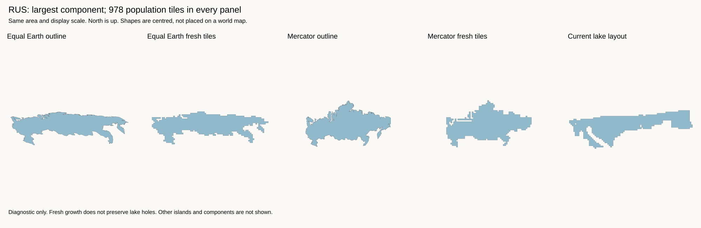
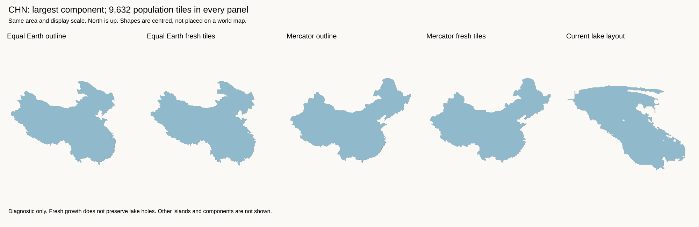
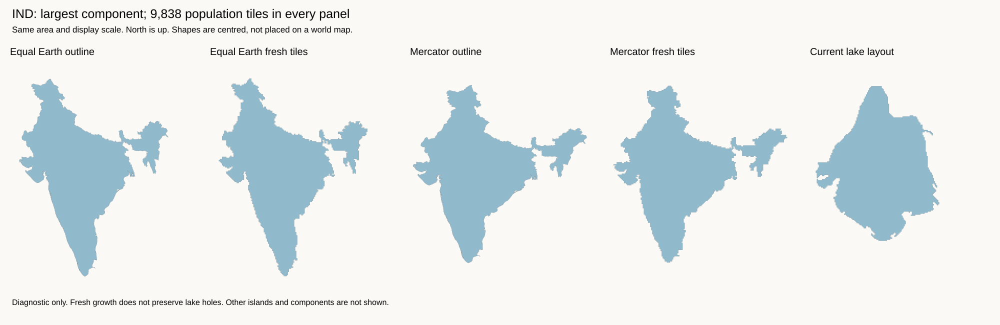
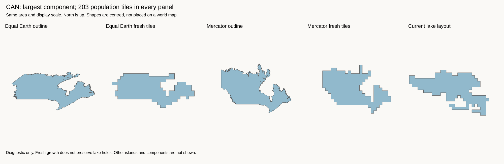

Corrected experiment: the existing margin-one lake fit with a Mercator starting projection.
Each row compares a source outline, fresh tiles, and the current lake layout. The five panels have the same area and display scale. Each country has its own display scale. North is up. All shapes are centred. There is no world placement in this test.
Population budgets are identical for both projections. Mercator changes the shape target, not the number of tiles. The calculation uses spherical Mercator without latitude clipping. It rejects the poles. See the PROJ formula.
Diagnostic only. Each row shows the largest component, not all islands. Fresh tile growth does not preserve lake holes. The source polygons used here do not contain the separately inserted lake cells. Do not use these templates as a replacement map. The published H3-MON map is unchanged.
Measurements and input hashes · Fresh tile coordinates · Work log · Previous regional-move test
Mercator gives a taller, less flattened starting outline. Both fresh tile shapes retain more of the source outline than the current layout. Other components, including those across the map seam, are not shown.

Both projections retain a recognizable source shape before placement. The current layout differs much more than the two starting outlines differ from each other.

Equal Earth gives a taller outline. Mercator gives a wider outline. Both fresh tile shapes retain the peninsula and northeastern extension. The current shape has lost much of that outline.

The largest component has 203 tiles; the country has 259 in total. This limits coast detail. Both fresh shapes retain Hudson Bay better than the current layout. The Arctic islands are not shown, so this is not a complete test of Canada's recognition.

This test shows that recognizable shapes are possible at these component budgets before placement. It does not identify which earlier pipeline stage caused each defect. It also does not show that these shapes will fit together without distortion. Overlap scores use a different target for each projection; do not use them to rank the projections against each other.
The next test must start from fresh shapes, keep lakes empty, and fit neighbouring shapes together. It must permit selected border losses when they reduce shape distortion. Moving the old distorted shapes apart cannot achieve this.
output/auto-cartogram/geometry-env/bin/python examples/auto-cartogram/review_projection_shapes.py \ output/auto-cartogram/world-55000-dissolved-input \ output/auto-cartogram/geography-margin1-lake-vacancies-final \ output/auto-cartogram/world-dissolved/polygons.geojson \ output/auto-cartogram/projection-shapes-new
The output directory must be new. Use --countries to select other country IDs.
The selection controls the diagnostic, not a placement rule.